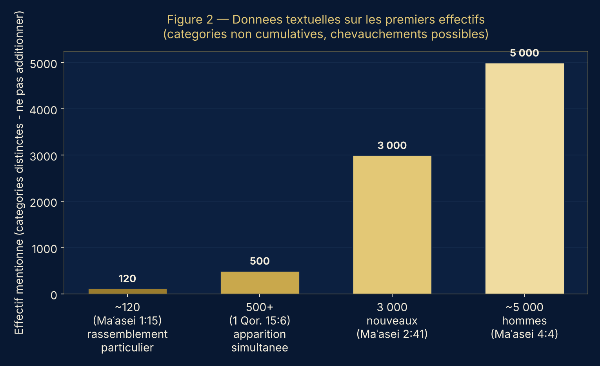
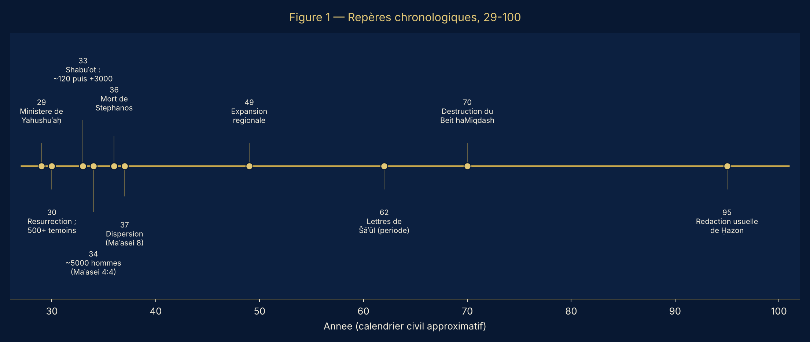
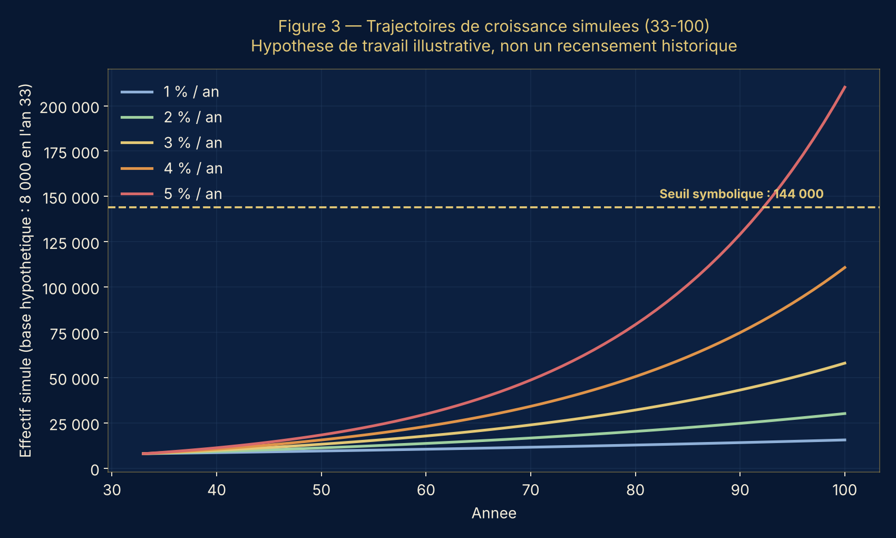
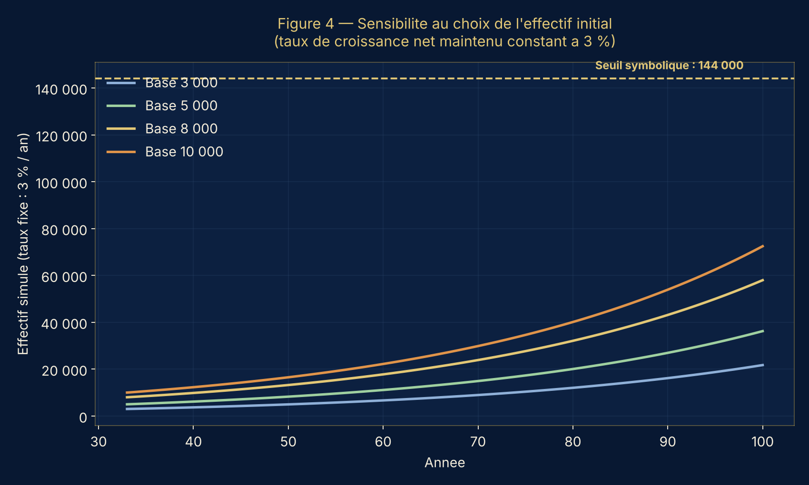
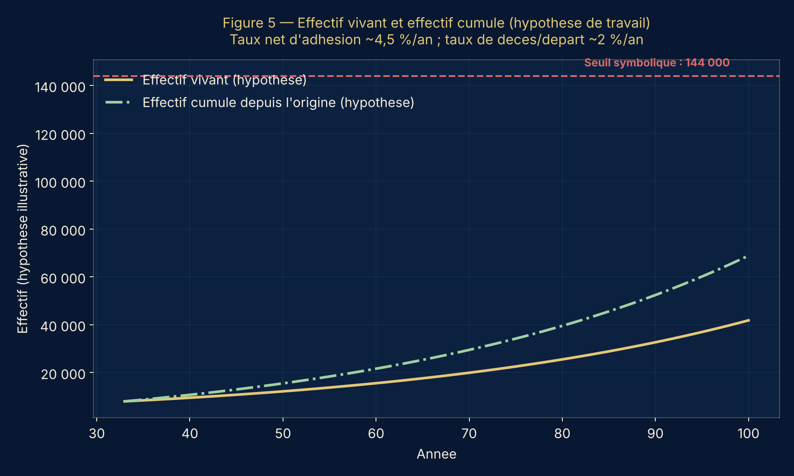
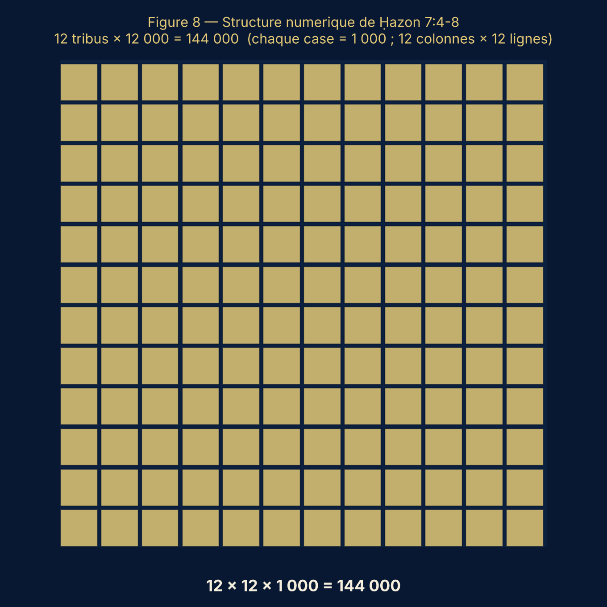

La croissance des premiers tal'midim, la permanence de la Qehilah et la portée des signes dans Ḥazon
Ḥazon 1:1 · 7:4-9 · 14:1-5 · Mattiyahu 16:18 · Maʿasei 1:15 · 2:41-47 · 4:4 · 5:14 · 6:7 · 8:1-4 · 9:31 · 16:5 · 1 Qorintim 15:6
Deuxième étude de La Voie sur les 144 000 — document de réflexion pour examen de la Qehilah.
« Examinez toutes choses ; retenez ce qui est bon. »1 Thessaloniciens 5:21
Cette étude prolonge notre première réflexion sur les 144 000 de Ḥazon 7:4-8 et 14:1-5. Notre but n'est pas de remplacer une certitude par une autre, mais d'examiner les données disponibles à la lumière des Ketubim Qadoshim, d'observer la croissance historique des premiers tal'midim de Yahushuʿaḥ, et de voir dans quelle mesure ces éléments invitent à questionner une lecture exclusivement littérale du nombre 144 000.
La question mérite d'être posée. Depuis près de deux mille ans, des générations successives de tal'midim ont reçu, vécu et transmis le message de Yahushuʿaḥ. Les premiers membres de la Qehilah ont disparu, mais le mouvement né de leur témoignage a continué de grandir. Comment concilier cette histoire avec l'idée que 144 000 désignerait un effectif littéral et définitivement clos ?
Cette seule interrogation ne tranche rien à elle seule, mais elle mérite un examen sérieux. Notre démarche s'appuiera sur quatre domaines complémentaires : l'analyse du texte, l'histoire des premières Qehilot, la modélisation mathématique, et l'interprétation des signes propres à Ḥazon.
Dès l'ouverture de Ḥazon, un premier élément mérite notre attention. Le texte ibri de Ḥazon 1:1 porte :
וְדַרְכּוֹ מָסַר אוֹתָהּ בְּאוֹתוֹת We-darko masar otah be-ototCette formulation dit que la révélation a été transmise, par l'intermédiaire du mal'akh, be-otot — par des signes. C'est ce terme, be-otot, que nous retenons comme repère pour lire Ḥazon, plutôt que de nous appuyer d'abord sur le vocabulaire grec des traductions.
Ce choix n'est pas accessoire. Ḥazon se présente d'un bout à l'autre comme un livre de signes : lampes, étoiles, animaux, cornes, sceaux, trompettes, nombres, personnages — autant d'éléments dont la description appelle, le plus souvent, une interprétation plutôt qu'une lecture au pied de la lettre.
Il serait donc imprudent de décider à l'avance que le nombre 144 000 doit nécessairement désigner un effectif arithmétique exact. Cela ne veut pas dire que tous les nombres de Ḥazon sont symboliques — le caractère visionnaire d'un livre n'annule pas toute valeur littérale. Mais cela impose une exigence de méthode :
Principe de lecture — avant de déclarer un nombre littéral, il faut d'abord examiner sa fonction dans le langage, la structure et le contexte de la vision.
C'est cette exigence qui nous conduit à interroger de près l'ensemble des données — textuelles, historiques et numériques — avant de nous prononcer sur les 144 000.
Pour comprendre la croissance des premiers tal'midim, il faut remonter avant les événements de Maʿasei 2. Yahushuʿaḥ avait déjà rassemblé des tal'midim durant son ministère : Louqas 10:1 rapporte l'envoi de soixante-dix ou soixante-douze d'entre eux. Plus tard, Šāʾūl précise, dans 1 Qorintim 15:6, que Yahushuʿaḥ ressuscité est apparu à plus de cinq cents akhim à la fois.
Ce détail compte : il atteste l'existence d'un groupe déjà substantiel, associé au témoignage de Yahushuʿaḥ, bien avant l'expansion décrite à Shabuʿot. Maʿasei 1:15 mentionne ensuite environ cent vingt personnes réunies — mais rien n'indique qu'il s'agisse là d'un recensement complet de tous les tal'midim existants. Les cinq cents témoins de Šāʾūl et les cent vingt réunis dans Maʿasei pouvaient très bien se recouper en partie ; additionner ces chiffres serait donc une erreur.
Première conclusion — la croissance de la Qehilah ne part pas d'un effectif mondial connu de cent vingt personnes. Ce nombre ne désigne qu'un rassemblement particulier, pas un point de départ absolu.
Maʿasei 2:41 rapporte qu'environ trois mille personnes furent ajoutées en une seule journée. Maʿasei 4:4 indique, un peu plus tard, que le nombre des hommes ayant cru atteignait environ cinq mille. Ces deux chiffres ne se cumulent pas simplement : les trois mille de 2:41 sont des personnes nouvellement ajoutées, tandis que les cinq mille de 4:4 représentent un effectif rapporté à un stade ultérieur — vraisemblablement celui des hommes seuls. Si ce second chiffre exclut les femmes, l'effectif réel pouvait être sensiblement plus élevé ; huit mille peut alors servir d'hypothèse de travail, sans valoir comme donnée historiquement démontrée.

Figure 1 — Les quatre effectifs mentionnés dans les premiers chapitres de Maʿasei et dans 1 Qorintim 15:6. Ce sont des catégories distinctes, qui ne s'additionnent pas automatiquement.
La suite du récit confirme une dynamique soutenue :
Ces indications restent qualitatives, mais elles ne sont pas négligeables : elles décrivent un mouvement dont la diffusion dépasse rapidement le cercle initial des tal'midim de Yahushuʿaḥ.

Figure 2 — Quelques repères chronologiques situant ces événements, du ministère de Yahushuʿaḥ à la rédaction usuelle de Ḥazon.
L'histoire des premiers tal'midim est marquée d'arrestations, de menaces et de déplacements forcés : l'arrestation de Képha et de Yaḥuānān (Maʿasei 4), de nouvelles mesures contre les shilliaḥim (Maʿasei 5), la mort de Stephanos (Maʿasei 7), puis une persécution d'ampleur qui disperse de nombreux tal'midim (Maʿasei 8). Mais cette dispersion n'a pas mis fin à l'annonce du message — Maʿasei 8:4 précise au contraire que ceux qui furent dispersés continuèrent leur activité là où ils arrivaient. La persécution a ainsi, paradoxalement, étendu la portée géographique du témoignage.
Il serait excessif de conclure que chaque persécution entraînait automatiquement une croissance : les effets historiques d'une persécution sont toujours complexes — pertes humaines, déplacements, ruptures de communautés, mais aussi formation de nouveaux réseaux. Ce que Maʿasei permet d'affirmer, plus modestement, c'est que les persécutions rapportées n'ont pas interrompu le développement de la Qehilah.
Dans Mattiyahu 16:18, Yahushuʿaḥ annonce qu'il bâtira sa Qehilah et que les portes du Sheʾol ne prévaudront pas contre elle. Cette déclaration occupe une place centrale dans notre réflexion.
Les premiers tal'midim étaient mortels. Plusieurs ont subi des violences, certains sont morts, d'autres ont transmis leur témoignage jusqu'au bout de leur vie. Et pourtant, la disparition de ces individus n'a pas entraîné celle du mouvement : de nouveaux tal'midim ont reçu l'enseignement, de nouvelles Qehilot se sont formées, d'autres générations ont poursuivi la transmission.
« Les portes du Sheʾol ne prévaudront pas contre elle. »Mattiyahu 16:18
La Qehilah ne se confond donc pas avec la durée de vie d'une seule génération. Il faut néanmoins distinguer deux affirmations : que la Qehilah ne sera jamais définitivement vaincue, d'une part ; que son effectif augmenterait chaque année sans jamais fléchir, d'autre part. Mattiyahu 16:18 soutient la première ; il ne fournit aucune formule mathématique démontrant la seconde. Garder cette distinction est indispensable à la rigueur de notre étude.
La principale difficulté tient à l'absence d'un recensement régulier des tal'midim au premier siècle. Nous disposons d'indications textuelles, de quelques chiffres et de témoignages sur la diffusion géographique — assez pour construire des modèles démographiques, pas assez pour reconstituer avec exactitude les effectifs réels. Trois grandeurs doivent être distinguées : l'effectif vivant à une date donnée, les nouvelles adhésions sur une période, et l'effectif cumulé depuis l'origine — qui inclut les personnes décédées depuis. Ces trois grandeurs ne sont pas interchangeables.
Pour une population initiale N₀, un taux annuel net r et une durée t, on peut écrire : N(t) = N₀ (1 + r)ᵗ. Ce modèle simple permet de comparer des hypothèses ; il suppose un taux constant, ce qui reste une simplification.
En prenant 8 000 comme base purement illustrative pour l'an 33, voici l'effectif simulé en l'an 100 selon le taux annuel net retenu :
| Taux annuel net | Effectif simulé en l'an 100 |
|---|---|
| 1 % | ≈ 15 600 |
| 2 % | ≈ 30 200 |
| 3 % | ≈ 58 000 |
| 4 % | ≈ 110 700 |
| 5 % | ≈ 210 300 |

Figure 3 — Trajectoires simulées selon le taux de croissance net annuel. À 5 % par an, le seuil symbolique de 144 000 serait franchi avant l'an 100 ; à 4 %, il resterait en-deçà. Hypothèse de travail, non un recensement.
Ces résultats ne sont pas des recensements : ils montrent seulement combien le résultat final dépend du taux choisi. Une différence de quelques points de pourcentage, maintenue sur plusieurs décennies, produit des écarts considérables.

Figure 4 — À taux constant (3 % par an), le choix de la base initiale (3 000 à 10 000) influence aussi fortement le résultat final que le taux lui-même.
Le modèle exponentiel net ne dit rien, à lui seul, du nombre total de personnes ayant un jour rejoint le mouvement. Il faut pour cela tenir compte des décès et des départs : N(t+1) = N(t) + A(t) − D(t) − S(t), où A désigne les nouvelles adhésions, D les décès et S les départs éventuels. Le nombre cumulé de personnes ayant appartenu à la Qehilah peut ainsi dépasser, et de loin, l'effectif encore vivant à une date donnée.

Figure 5 — Sous une hypothèse illustrative (≈4,5 % d'adhésions nettes et ≈2 % de décès ou départs par an), l'effectif cumulé dépasse largement l'effectif vivant à tout moment. Cette distinction compte particulièrement sur près de deux mille ans d'histoire.
Limites — nous ignorons les taux réels de mortalité, de départs ou de nouvelles adhésions, ainsi que les éventuelles périodes d'accélération ou de ralentissement. Ces modèles ne démontrent donc pas combien de tal'midim existaient réellement en l'an 100 ; ils permettent seulement d'évaluer des trajectoires possibles.
Si 144 000 désignait le total de tous les tal'midim fidèles ayant existé depuis le premier siècle, il faudrait en mesurer les implications. Sur deux mille ans, cela ne représenterait qu'une moyenne de soixante-douze personnes par an — une moyenne purement illustrative, qui ne prétend décrire aucune trajectoire réelle, mais qui donne la mesure du problème : les premières décennies rapportées dans Maʿasei comptent déjà des milliers de personnes, et les générations suivantes ont poursuivi la diffusion du message.
Cela constitue une difficulté sérieuse pour l'hypothèse selon laquelle 144 000 représenterait la totalité de tous les tal'midim fidèles à travers les siècles. Mais cette difficulté ne réfute pas une autre lecture possible : que les 144 000 désignent une catégorie particulière au sein d'un ensemble bien plus vaste. La démographie seule ne permet donc pas de trancher entre toutes les interprétations — elle oblige seulement à préciser ce que l'on entend exactement par « 144 000 littéraux ».
Ḥazon 7:4-8 présente une organisation précise : douze tribus, douze mille par tribu, soit 12 × 12 × 1 000 = 144 000. Le nombre douze occupe une place importante dans les Ketubim Qadoshim — les douze tribus d'Ysra'el, les douze shilliaḥim, les douze portes et fondations de la nouvelle Yarushalayim. Cette construction numérique semble donc porteuse de sens : totalité organisée, représentation du peuple de Yahawah, structure symbolique.

Figure 6 — La structure de Ḥazon 7:4-8 visualisée : douze groupes de douze mille.
Une telle construction ne suffit pas, à elle seule, à exclure toute lecture littérale — il faut l'examiner avec le reste de la vision. La liste même des tribus retenue par Ḥazon 7 y invite : Dan n'y figure pas, Levi y apparaît, Yoseph et Menashe sont comptés séparément. Cette composition inhabituelle pose une question légitime — s'agit-il d'une liste strictement généalogique, ou d'une représentation théologique du peuple de Yahawah ? — sans qu'on puisse conclure, du seul fait de cette particularité, que tous les nombres de la liste seraient symboliques.
Ḥazon 7 présente deux scènes successives : Yaḥuānān entend d'abord le nombre de ceux qui ont reçu le sceau — 144 000 — puis voit une Grande Multitude que personne ne peut compter, venue de toutes les nations, tribus, peuples et langues. Deux lectures sont possibles : deux groupes distincts, ou un même ensemble vu sous deux perspectives différentes.
Un parallèle éclairant se trouve en Ḥazon 5:5-6 : Yaḥuānān entend parler du Lion de Yehoudah, puis voit un Ti Mouton — le même sujet, annoncé d'une façon et montré d'une autre. Ce precedent mérite d'être mis en regard de Ḥazon 7, sans trancher la question par avance. Nous gardons donc ouverte l'hypothèse déjà formulée dans notre première étude : les 144 000 pourraient représenter un moyen ou une première part dans l'accomplissement du dessein de Yahawah, tandis que la Grande Multitude en représenterait l'aboutissement plus large — une hypothèse à confronter, non une conclusion acquise.
Ḥazon 14:4 décrit les 144 000 comme des prémices pour Yahawah et le Ti Mouton. Le terme grec aparchē mérite attention : dans certains contextes, les prémices appellent une récolte plus large ; dans d'autres, l'image souligne surtout une consécration ou une appartenance particulière. Il faut donc se demander si Ḥazon 14 emploie cette image pour désigner une première part d'un ensemble plus vaste, ou pour mettre en valeur le caractère consacré du groupe décrit — les deux lectures restant à peser.
Le même passage associe à ce groupe une pureté et une fidélité décrites en termes très imagés, ce qui renforce la nécessité d'une lecture attentive au contexte plutôt qu'au seul sens apparent des mots.
Dès Ḥazon 1:1, le lecteur entre dans une révélation transmise be-otot — par des signes — ce qui invite d'emblée à les reconnaître comme tels.
La structure 12 × 12 × 1 000 semble porter une signification qui dépasse une simple opération de comptage.
La composition retenue en Ḥazon 7 invite à y voir une représentation du peuple de Yahawah, pas seulement une généalogie.
La succession de Ḥazon 7:4 et 7:9 ouvre la possibilité de deux regards sur un même ensemble.
Prémices, pureté, fidélité : ces images peuvent appartenir à un même registre symbolique.
L'expansion du mouvement et les modèles démographiques compliquent l'idée que 144 000 serait le total de tous les tal'midim fidèles ayant jamais vécu.
La promesse de Mattiyahu 16:18 et la continuité du mouvement à travers les générations invitent à examiner avec prudence toute lecture qui réduirait l'ensemble des fidèles à un effectif extrêmement restreint.
Ces sept raisons ne sont pas sept démonstrations indépendantes : certaines relèvent de l'exégèse, d'autres de l'histoire ou de la théologie. Leur poids doit s'évaluer séparément, puis ensemble.
Une étude sérieuse ne peut ignorer les arguments contraires. Un nombre peut être littéral dans un livre par ailleurs riche en signes. Une construction symboliquement chargée peut aussi correspondre, par ailleurs, à un effectif exact. Les 144 000 pourraient désigner un groupe particulier plutôt que la totalité des tal'midim fidèles — auquel cas la croissance historique de la Qehilah ne suffirait plus à démontrer le caractère symbolique du nombre. La Grande Multitude, de son côté, pourrait être distincte des 144 000. Enfin, les données du premier siècle ne permettent pas d'établir avec certitude le nombre total de personnes ayant rejoint le mouvement.
Une interprétation ne devient pas solide parce qu'elle écarte les difficultés ; elle devient plus solide lorsqu'elle les affronte.
Après examen des données disponibles, l'interprétation symbolique des 144 000 nous paraît porter plusieurs arguments sérieux : le caractère visionnaire de Ḥazon, l'architecture du nombre, la composition des tribus, la relation avec la Grande Multitude et les images de Ḥazon 14. L'histoire de la croissance des premiers tal'midim vient appuyer cette lecture, en particulier face à l'hypothèse selon laquelle 144 000 représenterait la totalité de tous les fidèles à travers les siècles.
Nous ne pouvons cependant pas affirmer que les seules données démographiques démontrent le caractère symbolique du nombre, ni exclure définitivement qu'un groupe particulier en ait un effectif littéralement fixé à 144 000. Notre conclusion reste donc ouverte.
✦ Position de La Voie
Dans l'état actuel de notre compréhension, La Voie penche vers une interprétation symbolique des 144 000, tout en reconnaissant que la question mérite encore recherche et approfondissement.
Nous espérons que Yahawah, par son Rouaḥ ha'Qodesh, continuera de nous aider à mieux comprendre ce qui demeure obscur. Si de nouveaux éléments nous conduisaient à reconnaître une portée littérale, nous devrions être prêts à réexaminer notre position. Notre engagement n'est pas de défendre une interprétation à tout prix, mais de chercher ce qui est authentique.
Document préliminaire — pour examen, discussion et approfondissement au sein de la Qehilah La Voie.